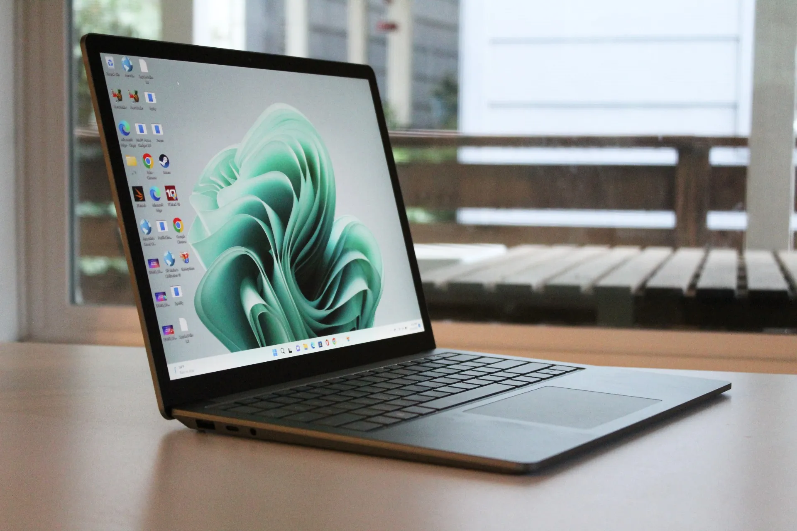
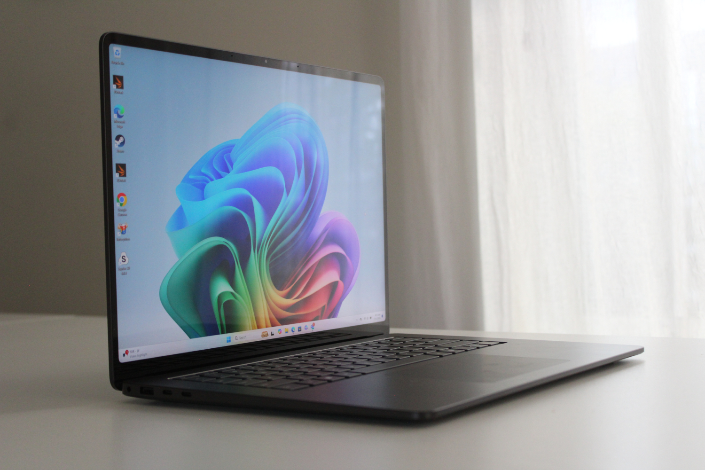
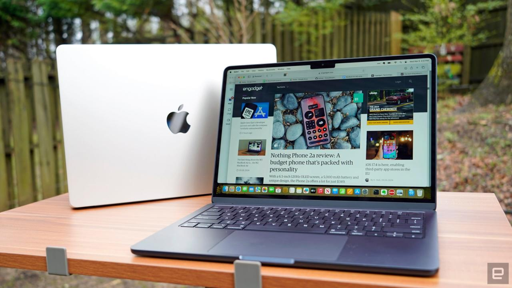
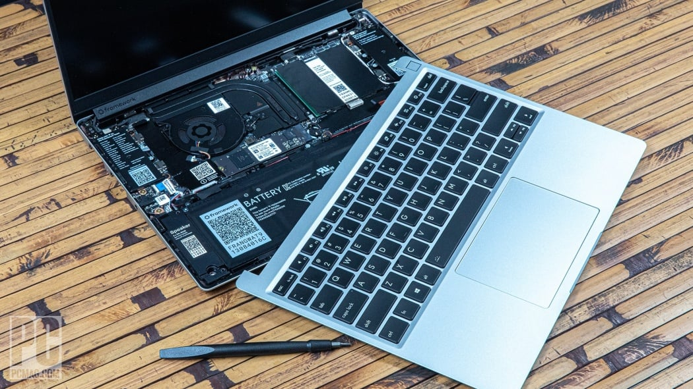
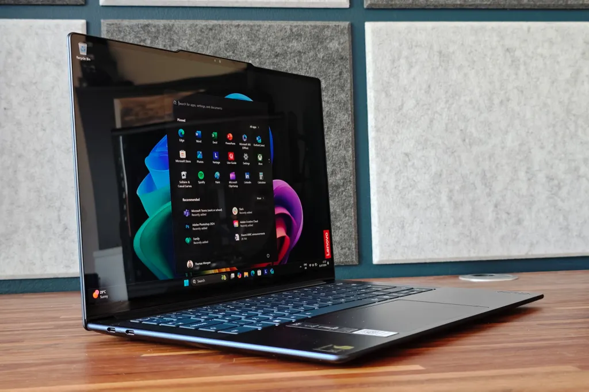

WELCOME TO FRAMEWORK
- About
- Collection
ABOUT
Using a laptop efficiently involves proper handling, maintenance, and ergonomics to ensure optimal performance and user comfort. Here's a comprehensive guide:
CONTENT
Blow shows the laptop collections that are currently available in FRAMWORKS. Rest assured that the company has taken consideration to the latestest technologies involving laptops and have succefully intergrated them to provide a fully functional and less problematic experience while using the laptop
THESE ARE CURRENTLY AVAILABLE FOR SALE
FRAMEWORK INSPITATION SERIES

FRAMEWORK CHROMEBOOK SERIES

FRAMEWORK STREAM SERIES

UNRELEASED

The FRAMEWORK XPS 13 (2023): is a premium ultraportable laptop designed for performance and style.
It is powered by Intel's 13th-generation processors, including the Core i7-1360P, offering 12 cores and a turbo boost up to 5.0 GHz.
Memory configurations include 16GB or 32GB of LPDDR5 RAM, paired with storage options of 512GB, 1TB, or 2TB PCIe NVMe SSDs.
Graphics are handled by integrated Intel Iris Xe, making it suitable for productivity tasks and light creative work.

The FRAMEWORK 13.4: display comes in several high-quality options: Full HD+ (1920 x 1200) IPS, 3.5K OLED (3456 x 2160),
and Ultra HD+ (3840 x 2400) IPS, all with touch support.
It features a sleek, minimalist design, with an edge-to-edge keyboard and a capacitive touch function row.
The seamless glass touchpad is integrated into the palm rest for a modern aesthetic. Connectivity includes two Thunderbolt 4 (USB-C) ports,
and Dell provides adapters for USB-A and 3.5mm headphone jacks, as these are not included in the chassis.

The FRAMEWORK Pro: 14-inch (2023) with the M2 Pro chip is a high-performance laptop designed for demanding users such as professionals and creatives.
It features the M2 Pro processor, which includes a 10-core CPU and a 16-core GPU for efficient multitasking and handling intensive tasks like video editing and 3D rendering.
The laptop is equipped with 16GB of unified memory, expandable up to 32GB, and storage options ranging from 512GB to 8TB SSD, offering lightning-fast data access.

The FRAMEWORK: 13-inch (2022) with the M2 chip is a lightweight and efficient laptop designed for everyday use and moderate creative tasks.
It is powered by Apple’s M2 processor, which features an 8-core CPU and a 10-core GPU, providing excellent performance for multitasking, video editing, and casual gaming.
The device comes with 8GB of unified memory, configurable up to 24GB, and offers SSD storage options ranging from 256GB to 2TB for fast and reliable data access.
FRAMEWORK is a leading innovator in the laptop industry, committed to delivering high-quality devices that meet the evolving needs of modern users. With a focus on cutting-edge technology, durability, and user-centric design, the company aims to enhance productivity, creativity, and entertainment experiences. By integrating the latest processors, vibrant displays, and robust security features, [Company Name] ensures its laptops remain at the forefront of performance and reliability. Looking ahead, the company is dedicated to pushing boundaries with sustainable manufacturing practices, advanced connectivity options, and seamless integration of software and hardware. This commitment reflects its vision to empower users with tools that not only meet today's demands but also anticipate tomorrow's challenges, solidifying its reputation as a trusted name in the tech world.
WATCH THE VIDEO BELOW TO KNOW MORE ON HOW TO MAKE PURCHASES WITH FRAMWORK